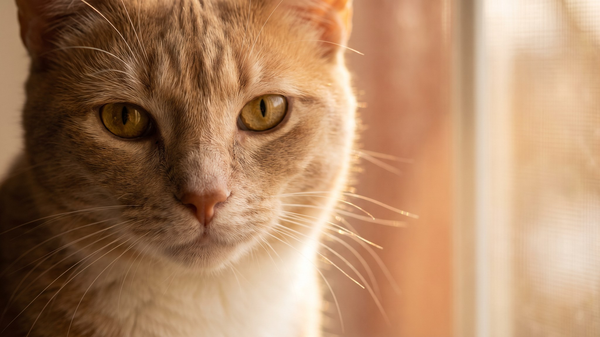

Котёнок крутится волчком за собственным хвостом и выглядит смешно. То же у взрослой кошки, повторяется несколько раз в день и заканчивается тем, что она кусает хвост. Поведение одно, а причины разные. Разбираем, когда это нормальная игра, а когда стоит посмотреть внимательнее.
🐾 У вашей кошки так же?
Расскажите в AnimaLife, как ведёт себя ваш питомец, — приложение объяснит причину и даст пошаговый план. Бесплатно, без записи к специалисту.
Разобрать свой случай → Разобрать в MAX →
У вас iPhone? AnimaLife есть в App Store
У котят до года хвост воспринимается как самостоятельный объект. Кошки учатся охотиться, тренируя рефлексы на всём, что движется. Собственный хвост двигается, реагирует на движение тела и всегда под рукой. Это нормальная игра, через которую котёнок отрабатывает прыжок, захват и ориентацию в пространстве.
У молодых кошек до 2–3 лет эпизоды погони за хвостом тоже нормальны, если они:
Четыре ситуации, при которых поведение выходит за рамки игры.
Навязчивость. Кошка гоняется за хвостом часто, долго, с трудом переключается на другое. Это может сигналить о скуке или тревожном состоянии. Навязчивые повторяющиеся действия у кошек часто связаны с недостатком среды: мало игр, мало пространства, нет возможности реализовать охотничий инстинкт иначе.
Кошка кусает хвост до крови или выдёргивает шерсть. Это уже не игра. Вероятный повод: раздражение или зуд у основания хвоста. Осмотрите кожу у основания: покраснение, шелушение, залысины. Если есть изменения кожи, покажите ветеринару.
Поведение появилось у взрослой кошки, которая раньше так не делала. Новое поведение во взрослом возрасте требует внимания. У взрослых кошек охота за хвостом может появляться на фоне стресса (переезд, новое животное, изменение распорядка), а также при дискомфорте в области хвоста или крестца.
Кошка злится на свой хвост. Шипит, агрессивно атакует, потом в растерянности смотрит на него. Это поведение, при котором животное как будто не узнаёт собственный хвост, стоит обсудить с ветеринаром.
Кошки в квартире без доступа к улице живут в очень ограниченной среде. Если в этой среде нет достаточного количества охотничьих стимулов, они начинают охотиться на то, что есть под рукой, включая собственный хвост.
Что помогает обогатить среду:
Запишитесь на приём, если:
Врач осмотрит основание хвоста, исключит кожные и неврологические причины. Дальнейший план зависит от того, что именно найдёт специалист.
Материал носит информационный характер и не заменяет очную консультацию ветеринара.
🐾 Хотите понять, что кошка говорит вам?
Опишите ситуацию или пришлите видео в AnimaLife — AI разберёт поведение вашего питомца и подскажет, что делать. Бесплатно, ответ за минуту.
Разобрать поведение → Разобрать в MAX →
У вас iPhone? AnimaLife есть в App Store
🐾 Понравился разбор?
Подпишитесь на канал — каждый день разбираем по одному тревожному симптому у кошек и собак: что в пределах нормы, а когда пора к врачу. Подпишитесь, чтобы не пропустить разбор, который может спасти здоровье вашего питомца.